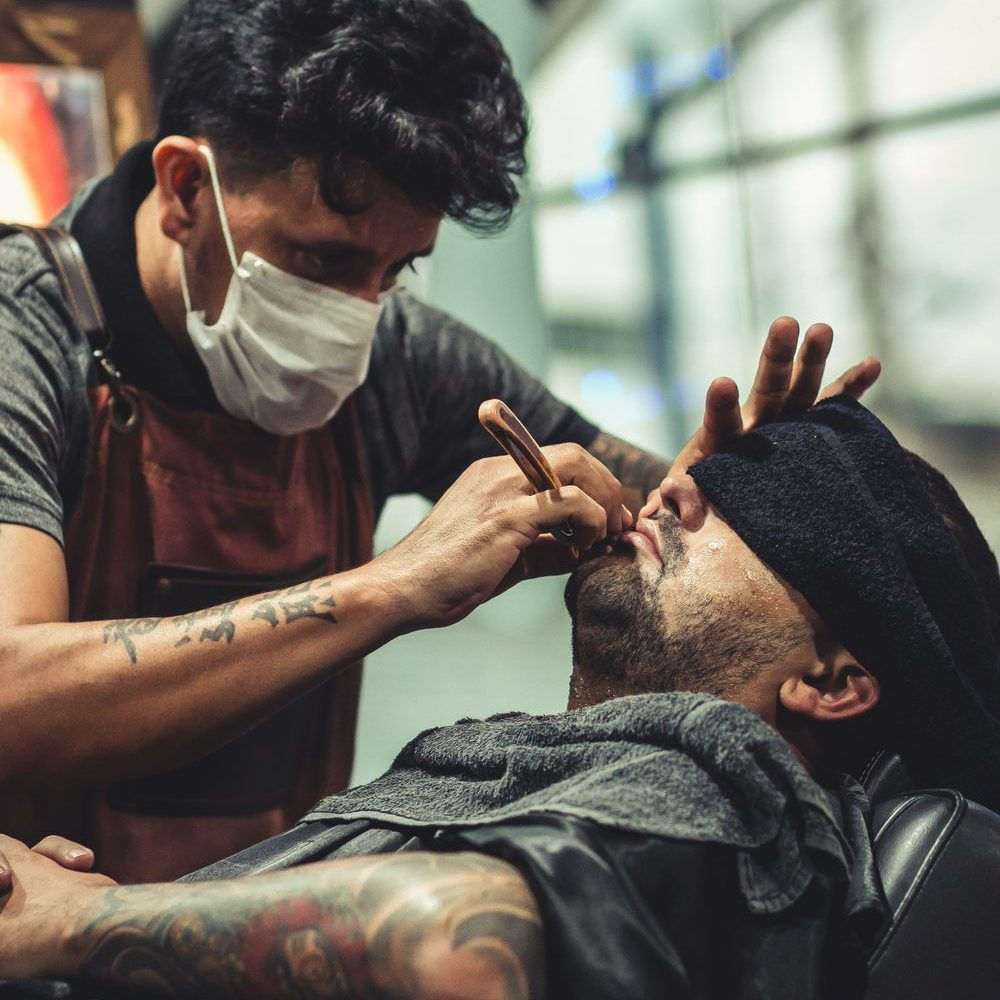

About
Buzzing onto the scene in February 2024, The Hive Barber Co. establishes itself as Waterford, Maine's newest destination for sharp styles and good vibes. Step into the comfortable, welcoming space and unwind with a complimentary coffee. Whether seeking a classic cut or a trendy fade, The Hive promises a personalized experience that leaves you feeling ready to take on the day.
Visit & Contact
Phone
(207) 744-2252
Email
thehivebarberco@gmail.com
Address
1208 Norway Rd
Waterford, ME 04088
Hours
Tue–Fri 9 AM–5 PM
Sat 9 AM–3 PM
Sun–Mon Closed
Services & Prices

Illustrative photo
- Classic cuts
- Fades
- Hot lather straight-razor shave with hot towel
- Complimentary coffee
From the shop's own business description and listings (checked Oct 30, 2026). Prices aren't published online — call for current prices.
Reviews
Sample reviews for this demo — your real customer reviews would go here.
★★★★★“Great cut, friendly atmosphere, and I was in and out quickly. Wouldn't go anywhere else.”
— Sample review
★★★★★“Always leave looking sharp. Clean shop and easygoing conversation every visit.”
— Sample review